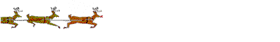

s1.gif
s1.gif
Лабораторные задания по курсу "Введение в Интернет"
Создайте пример анимационного изображения, используя функцию animate. Размер всех картинок - 400x60 пикселей. Кроме кнопок "Быстрее" и "Медленнее", добавить еще кнопки "Стоп" и "Старт" (подумайте, как это можно сделать).
Использование данной функции зависит от типа просмотрщика - Пример скрипта для проверки просмотрщика.
s1.gif
 s2.gif
s2.gif
 s3.gif
s3.gif
 s4.gif
s4.gif
 s5.gif
s5.gif
 s6.gif
s6.gif
 s7.gif
s7.gif
 s8.gif
s8.gif
 s9.gif
s9.gif
 s10.gif
 s11.gif
s11.gif
 s12.gif
s12.gif